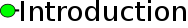

|
 |  |
 |
||
| History: Release version online | |||||
= Introduction =
| Welcome to the CMCompare Webserver! If you have RNA-family models and want to compare them, the CMCompare webserver can help you. RNA-family models can be formulated as covariance models. You can either compare your own uploaded set of covariance models among themselves, or against preexistent ones from Rfam. Rfam is a repository of curated RNA family models in covariance model (.cm) format. ncRNA homology search: Covariance model comparison:
A tutorial and examples for cases like these can be found in Help. The Webserver has been published in the Nucleic Acid Research Webserver Issue 2013. |
= History =
| Version | Git-commit | Date | Description |
| 1.10 | 73 | Tue Sep 3 13:00 2013 +0100 | Fixed a bug with HMMs in input. Added links to publication. Increased upload file size limit to 1.5Mb. Updated Help and Introduction pages. |
| 1.09 | 68 | Tue Apr 29 23:00 2013 +0100 | Added feature to define specific groups of Rfam models to compare against |
| 1.08 | 66 | Tue Apr 6 13:30 2013 +0100 | Improved and expanded the help section for link score distribution |
| 1.07 | 65 | Tue Apr 2 20:15:08 2013 +0100 | Added improvements based on reviewer comments |
| 1.00 | 58 | Thu Dec 27 13:28:08 2012 +0100 | Stable Version |
| 0.00 | 1 | Sun Jan 29 21:04:25 2012 | Development Version |